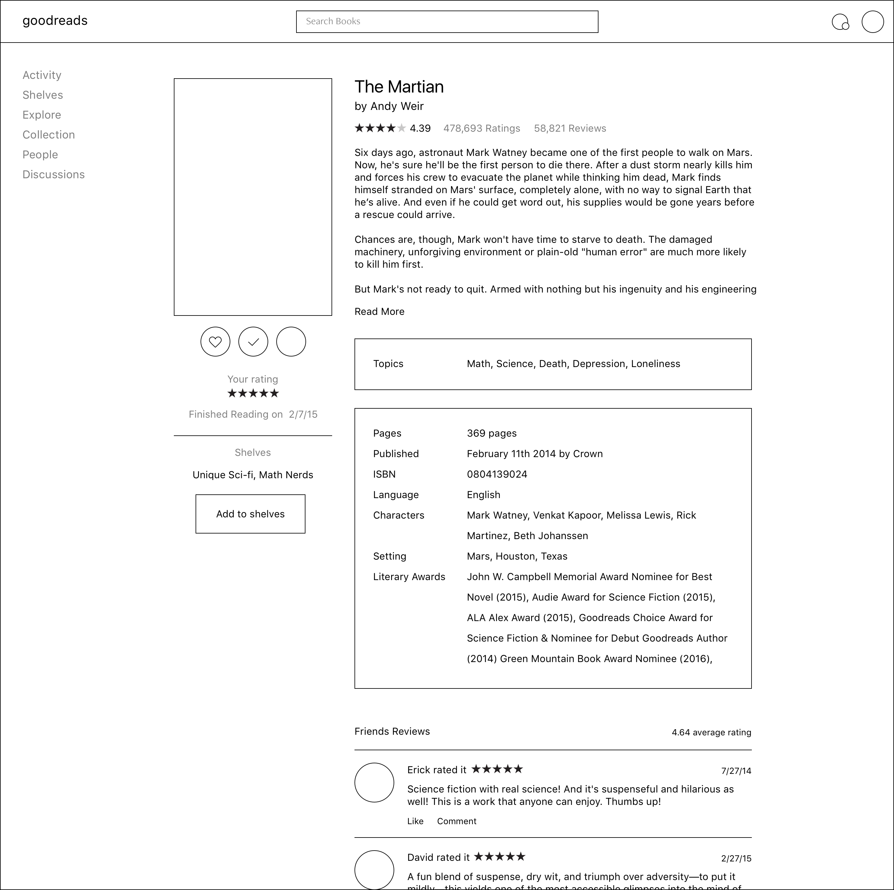
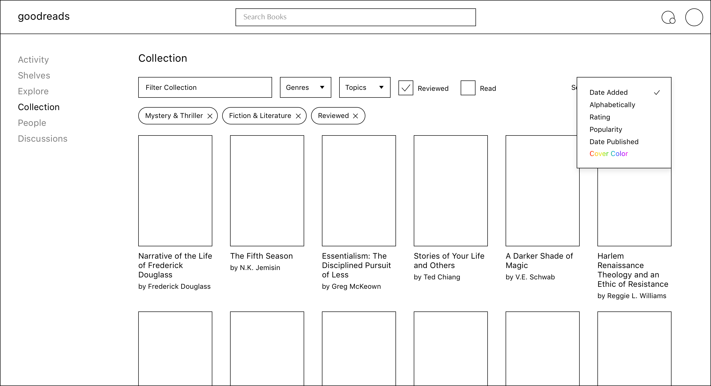
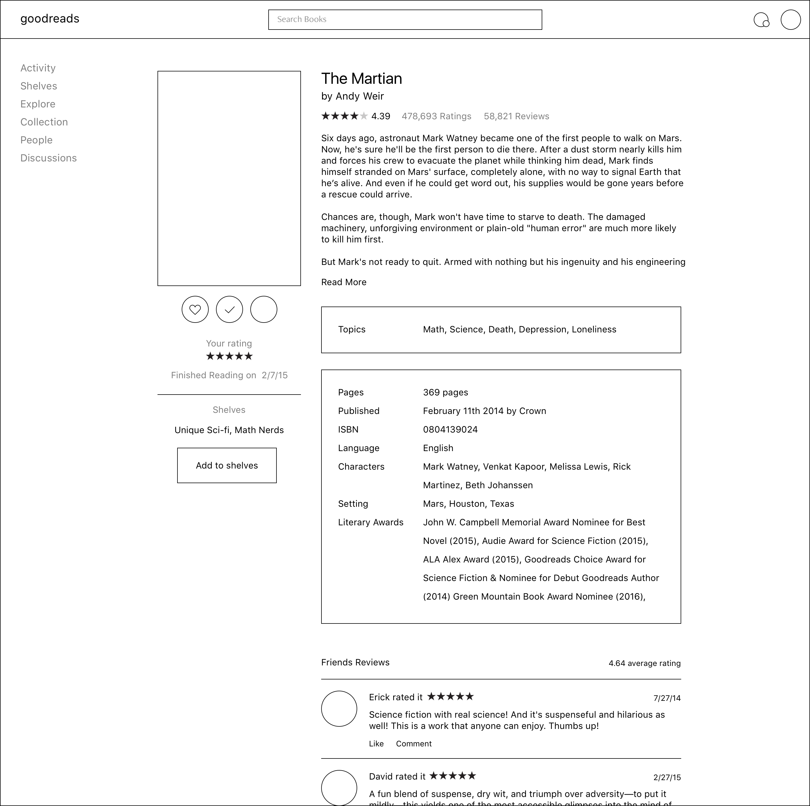
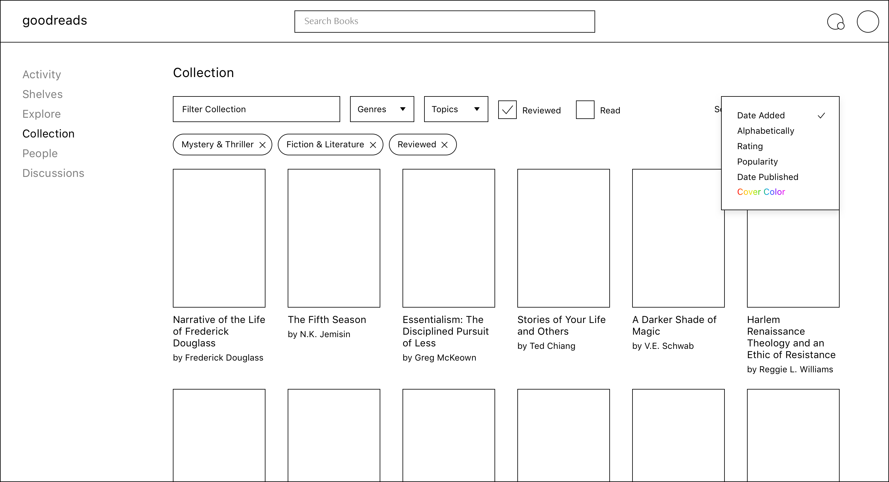
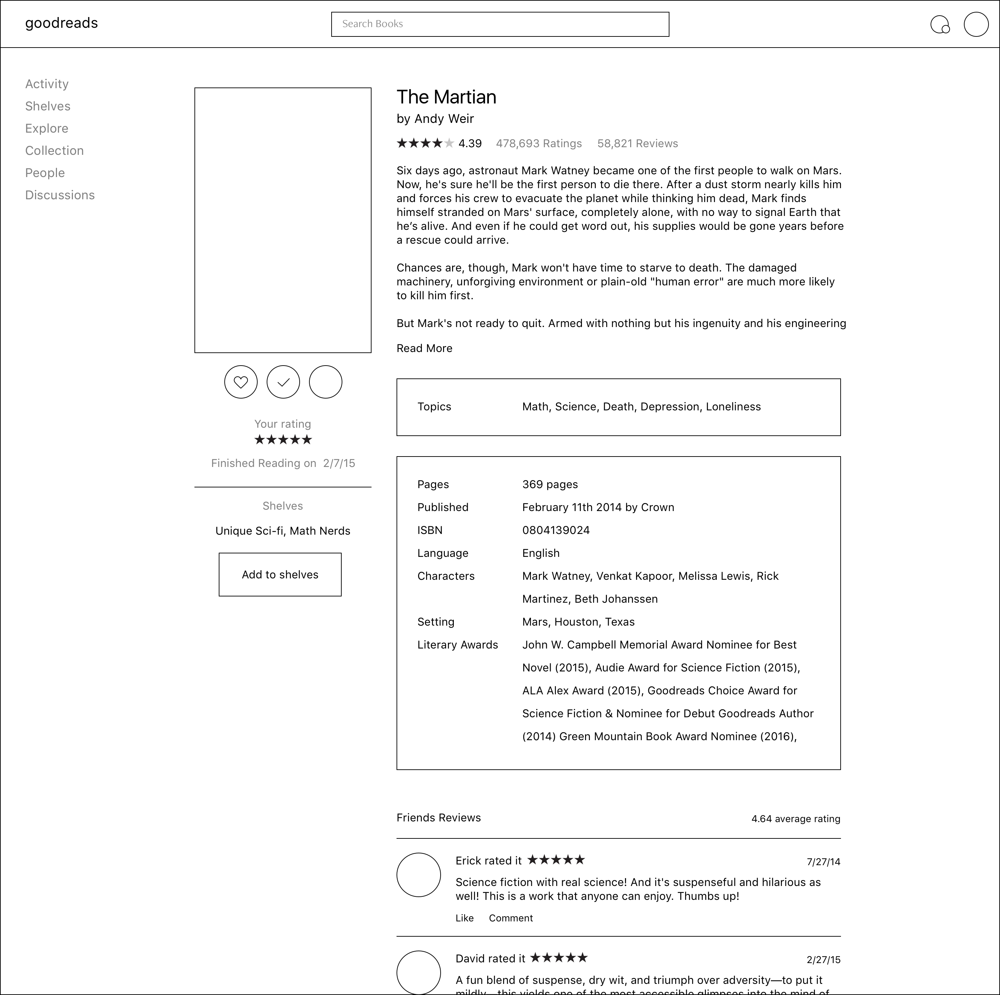
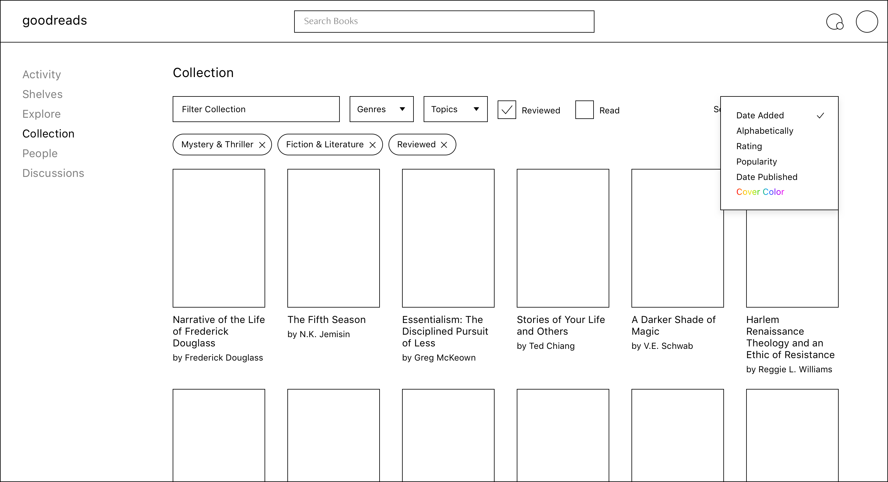
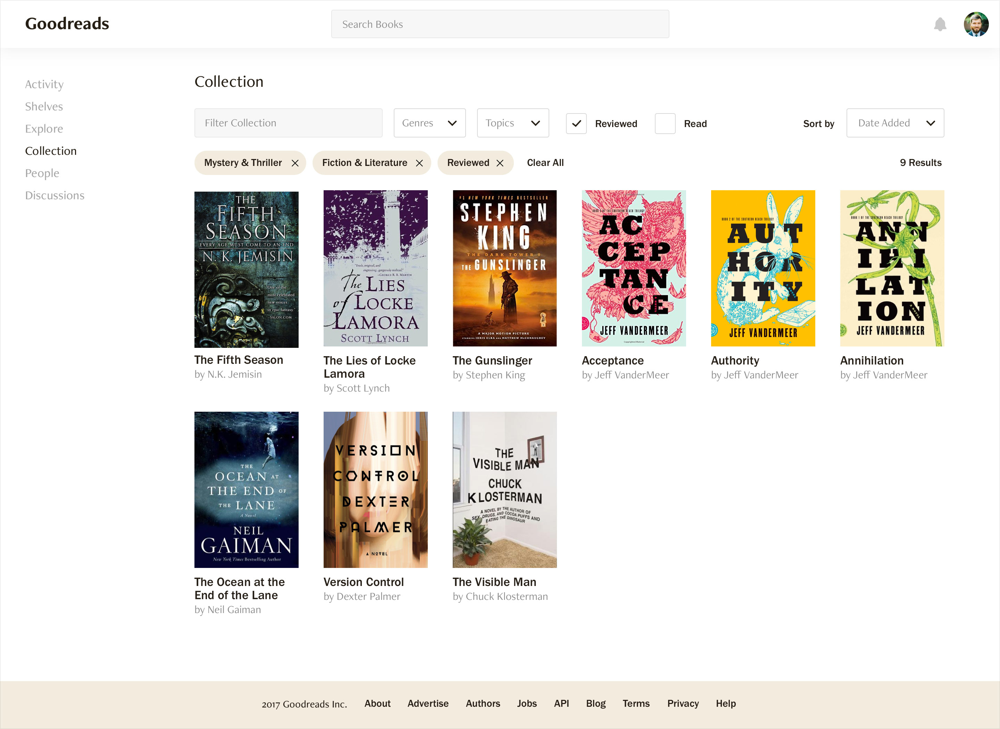
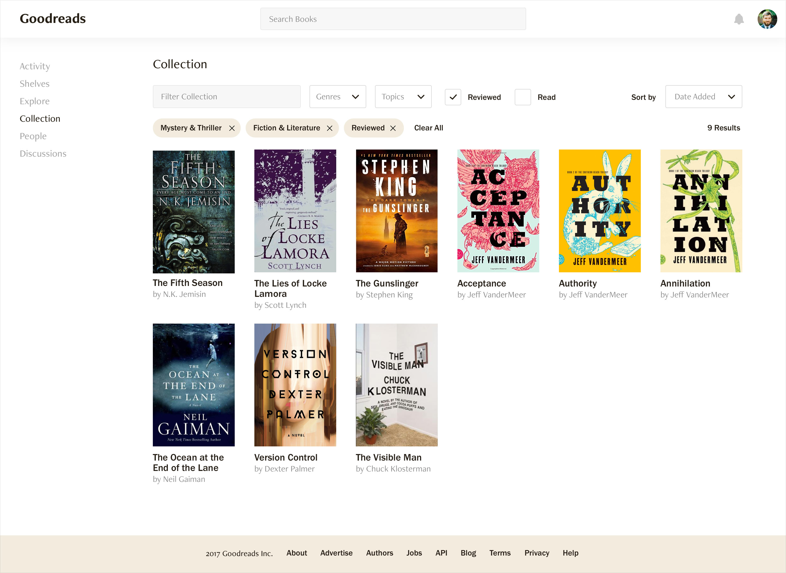
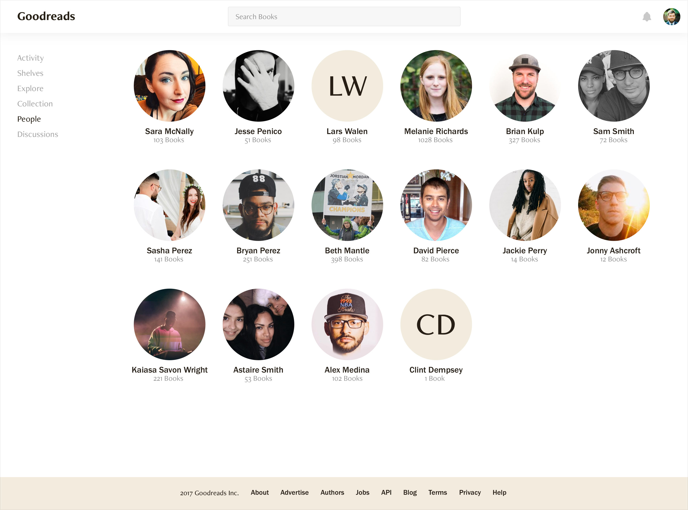

Mockups
Time to dig into the details: fonts, sizes, animation, shadow, and colors.
Fonts: Franklin Gothic URW, Freight Neo Pro
Animation & Depth study: Hover over the book covers belowI’m a big fan of reading. When I thought about a product to reimagine and redesign, I immediately thought of Goodreads. Goodreads is a social network for people who like to read. Goodreads catalogs 1.5 billion books and has an impressive 55 million members who have left over 50 million reviews. It’s one of my favorite social networks because of it’s content, but it leaves a lot to be desired in form and function.
Goodreads has some great goals:
I’ve been a member since 2013—While they’ve improved a lot there are a handful problems that I run into regularly.
I started out by dumping all of my preconceived thoughts onto paper. This included a lot of lists, documenting attributes, identifying the main sections of the product (how can I simplify and improve the experience?), a little brainstorming to search for any delight that could be added (Sort your bookshelves based on the color of the cover!) and writing down any open questions I had.
Book Detail
|
Member Detail
|
Author pages
|
I started sketching out some simple mobile layouts that could be used for a native app or a responsive site. I knew I wanted the main way you interact with your bookshelves to be swiping on mobile.
Initial mobile sketches
From there I was able to sketch some rough desktop sizes. This included a good amount of the screens I would mockup for the final design.
Initial desktop size sketches
After that I spent a little time focusing on some of the micro interactions across the site. How should filtering and sorting work? How can you add something to your collection? Is it different than adding it to a shelf?

A lot of descisions were made in this phase of the project:
I wanted to work from real data so I took this time to gather enough book titles, authors, and covers to use throuhgout the design. I set up my styles and symbols in sketch so I could quickly apply changes across all of the pages.


Time to dig into the details: fonts, sizes, animation, shadow, and colors.
Fonts: Franklin Gothic URW, Freight Neo Pro
Animation & Depth study: Hover over the book covers belowIterations

Final Screen Designs
Here you can see all of your books (paginated) as well as filter them by name, genre, topic, if you’ve reviewed it or not, and if you’ve read it. You can also sort by date added, alphabetical, highest rated, most popular, date published, and sorted by color! When you hover over the book you see the cover lift up and show depth and you can see how many of your friends also have the book in their collection.
 


The top of your shelves view is your “Currently Reading” shelf. Any book that you have set to currently reading will be added here. You can update the progress for each book and the graph will animate to the new position. You’ll also get a “Favorites” default shelf. This will help your friends and followers get a good picture of what you like. You can continue to create as many shelves as you’d like.

This is where you’ll find the latest books that are trending on Goodreads. You can also find featured books, new releases, and personalized recommendations for you. This is where you’ll be able to access the vast catalog of books through the genre pages and view all of the literary award winners.

The activity feed will keep you up to date on what you’re friends are reading, saving, and sharing. You can comment on and like any post with notifications for each user.

The book page has everything you need to know about a book. The rating and all of the reviews as well as detailed information about the release and discussions with other Goodreads members. You can preview and buy the books as well as find more book from that other or more books in the series.

Find all of the other books your favorite author has written. You can also follow them so their updates show up in your activity feed.

Your member page is what your followers will see. Your profile page displays all of your stats: books read, ratings, average rating, shelves, followers, and following. Your Currently Reading and Favorites shelfs are at the top to help describe you followed by your recent activity.

This section helps you keep track of all of the discussions you’re having about a book, see new posts and the latest activity.

The people section gives you an at a glance list of your friends and how many books they’ve collected. You can easily navigate into their profile.
Marketing and search results pages


Thanks for reading through to the end! I hope you this gave you a glimpse of what goes into my design process through research, ideation, iteration, prototyping and visual design. Please let me know if you have any questions.